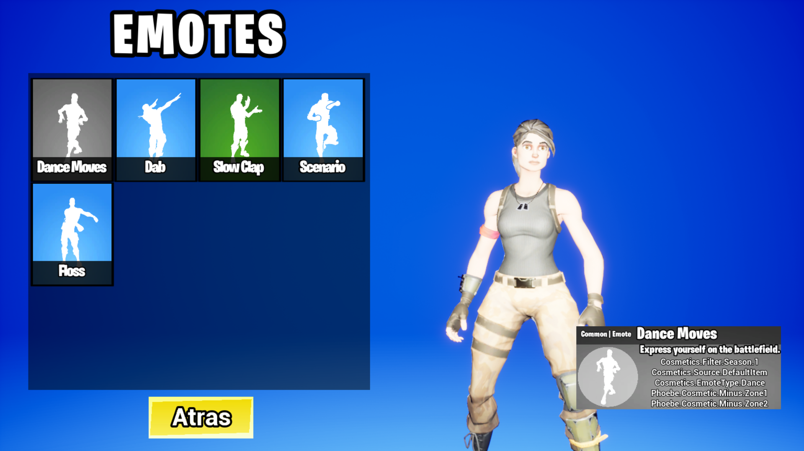
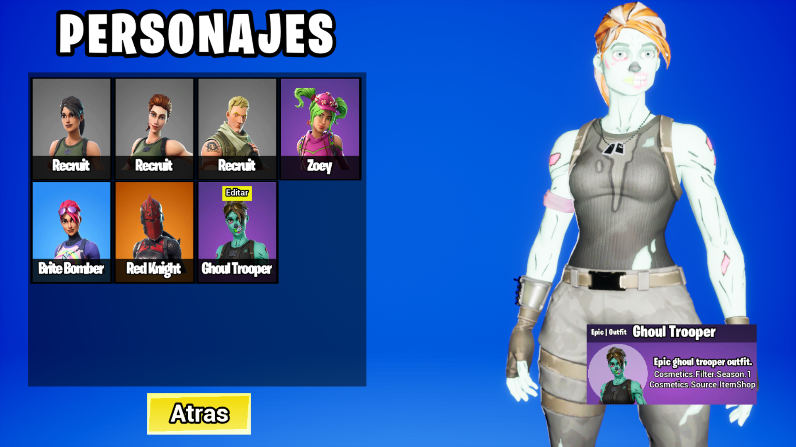

FORTNIQUE: requisitos mínimos en PC 1 Intel HD 4000 en PC o Intel Iris Pro 5200 o AMD GPU equivalente en Mac. 2 Core i3-3225 3,3 GHz. 3 4 GB de RAM. 4 Windows 7/8/10 de 64 bits o versión de macOS 10.14.6. 5 Los ordenadores Mac deben ser compatibles con Metal (API). Podéis comprobar si vuestro Mac es compatible con Metal aquí.
ademas podes probar todos los personajes y bailes gratis.
 